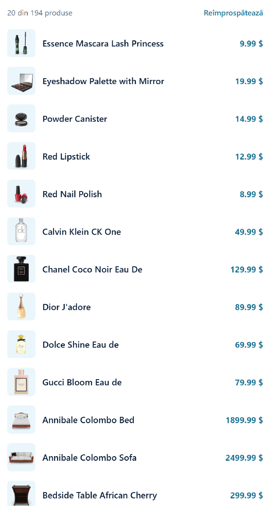
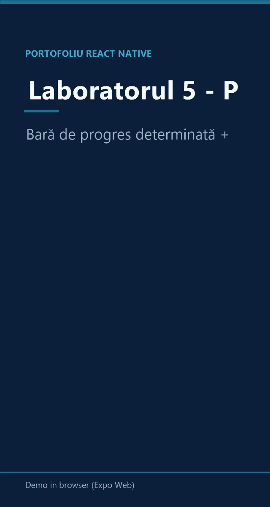

Featured Project
Laborator 05 — Refresh, paginare, progres
Un catalog paginat din dummyjson și două componente independente, testate separat: o bară de progres determinată și un cronometru. Ecranul parcurge paginarea automată, reîmprospătarea și cele trei tipuri de erori, fiecare cu locul ei.
- Paginare automată la scroll, fără duplicate
- Reîmprospătare care păstrează lista pe ecran
- Rețea căzută → banner cu reîncercare, listă goală → mesaj
- Cronometrul pornește, se oprește și se resetează
Capturat în browser

